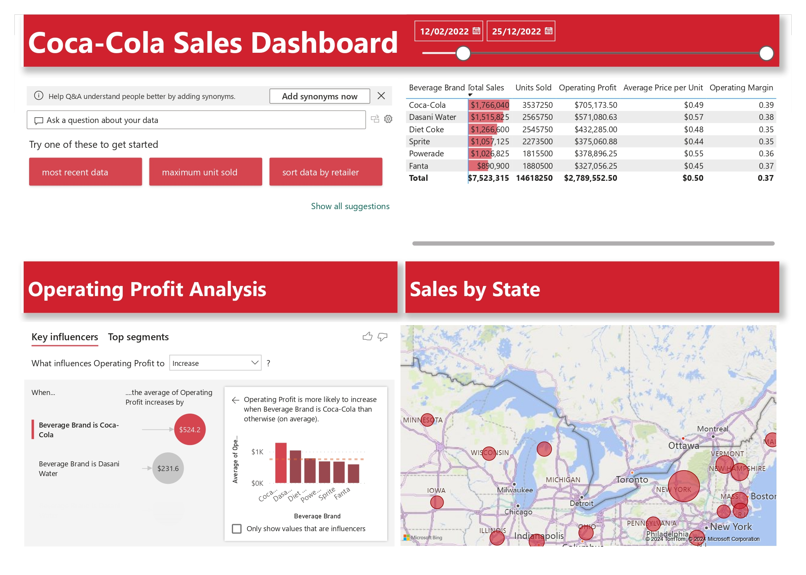

Project Summary
This dashboard is designed for stakeholders who need to understand overall performance fast, then drill into what is driving changes in sales and profitability. It brings core measures together (sales, units sold, operating profit, operating margin and average price per unit) and supports exploration by beverage brand and geography.
Headline KPIs (from the dashboard)
Total Sales
$7,523,315
Units Sold
14,618,250
Operating Profit
$2,789,552.50
Date Range
12/02/2022 – 25/12/2022
Values shown are taken from the KPI tiles visible on the Power BI dashboard.
Key Insights
- Brand performance comparison is central to the report. Coca-Cola shows the highest total sales among the listed brands ($1,766,040) and the highest units sold (3,537,250) in the brand table view.
- The dashboard captures per-brand operating profit values (for example Coca-Cola $705,173.50 and Dasani Water $571,080.63), enabling quick profit contribution comparisons alongside sales volume.
- Average price per unit differs by brand (for example Dasani Water shows a higher unit price than several other brands), which helps explain revenue differences even where volumes are similar.
- The “Key influencers” view highlights the brand effect on operating profit: beverage brand being Coca-Cola is associated with a larger increase in average operating profit than other brands, with Dasani also highlighted as an influencer.
- A “Sales by State” map view supports geographic performance review and is useful for regional trading conversations and prioritisation.
What This Project Demonstrates
- KPI framework design for sales and profitability reporting
- Brand and geography drill-down for stakeholder self-service
- Driver analysis mindset (moving from reporting to “why”)
- Clear layout for monthly trading packs and performance reviews